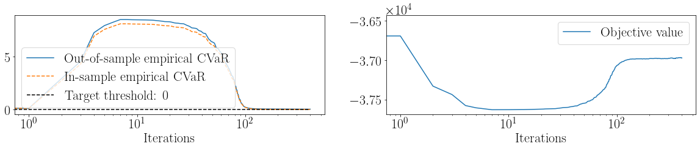
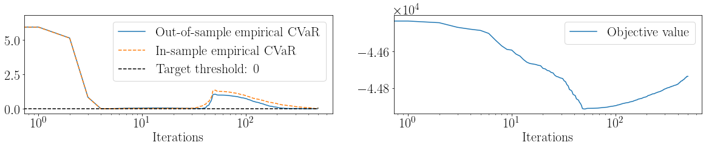
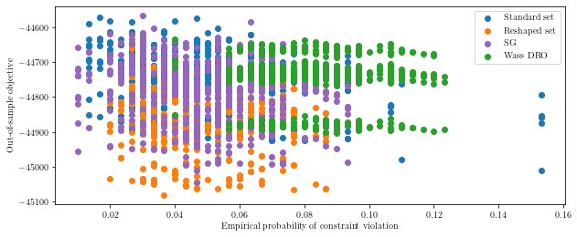
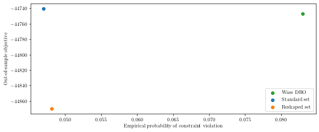

Learning Uncertainty Sets#
[90]:
import cvxpy as cp
import scipy as sc
import numpy as np
import numpy.random as npr
import torch
from sklearn import datasets
import pandas as pd
import lropt
import matplotlib.pyplot as plt
from sklearn.model_selection import train_test_split
import warnings
import sys
sys.path.append('..')
from utils import plot_tradeoff,plot_iters
warnings.filterwarnings("ignore")
plt.rcParams.update({
"text.usetex":True,
"font.size":18,
"font.family": "serif"
})
colors = ["tab:blue", "tab:green", "tab:orange",
"blue", "tab:purple", "tab:brown", "tab:pink", "tab:grey", "red"]
Example 3: Affine Adjustable Robust Optimization: Inventory management#
- We solve the robust optimization problem given as :nbsphinx-math:`begin{equation*}
- begin{array}{ll}
text{minimize} & L\ text{subject to} & -r^Ty^0 - r^TYu + (t+h)^Ts le L, quad forall uin mathcal{U}(mathcal{D}_N,theta)\ & y^0_i + y_i^Tuleq s_i, quad i = 1, dots, N, quad forall uin mathcal{U}(mathcal{D}_N,theta)\ & y^0_i + y_i^Tu leq d_i^0 + q_i^Tu, quad i = 1, dots, N, quad forall uin mathcal{U}(mathcal{D}_N,theta)\
& mathbf{1}^Ts = C\ & s leq c\ & s geq 0.
end{array}
end{equation*}`
[2]:
def data_scaled(N, m, scale, seed):
np.random.seed(seed)
R = np.vstack([np.random.normal(
i*0.03*scale, np.sqrt((0.02**2+(i*0.1)**2)), N) for i in range(1, m+1)])
return (R.transpose())
def data_modes(N, m, scales, seed):
modes = len(scales)
d = np.zeros((N+100, m))
weights = int(np.ceil(N/modes))
for i in range(modes):
d[i*weights:(i+1)*weights,
:] = data_scaled(weights, m, scales[i], seed)
return d[0:N, :]
def loss(L,y,Y,s,r,alpha, data,mu=1000,l=10000,quantile = 0.95, target = -0.1):
sums = 0
totsum = 0
Nsample = data.shape[0]
for i in range(Nsample):
sums += torch.sum(torch.maximum(y + Y@data[i] - s-alpha, torch.tensor(0.,requires_grad = True)))
sums += torch.sum(torch.maximum(y + Y@data[i] - torch.tensor(d) - torch.tensor(Q)@data[i] - alpha, torch.tensor(0.,requires_grad = True)))
sums += torch.maximum(-r@y - r@Y@data[i] + torch.tensor(t+ h)@s - L - alpha, torch.tensor(0.,requires_grad = True))
newsums = torch.sum(torch.where(torch.maximum(y + Y@data[i] - s, torch.tensor(0.,requires_grad = True))>=0.001,torch.tensor(1.), torch.tensor(0.)))
newsums += torch.sum(torch.where(torch.maximum(y + Y@data[i] - torch.tensor(d) - torch.tensor(Q)@data[i], torch.tensor(0.,requires_grad = True))>=0.001,torch.tensor(1.), torch.tensor(0.)))
newsums += torch.where(torch.maximum(-r@y - r@Y@data[i] + torch.tensor(t+ h)@s - L, torch.tensor(0.,requires_grad = True))>=0.01, torch.tensor(1.), torch.tensor(0.))
totsum += newsums/(2*10+1)
sums = (sums/((1-quantile)*(2*10+1)*Nsample)) + alpha
return L + torch.tensor(l)*(sums - torch.tensor(target)) + torch.tensor(mu/2)*(sums - torch.tensor(target))**2, L, totsum/Nsample, sums.detach().numpy()
def loss(L,y,Y,s,r,alpha, data,mu=1000,l=10000,quantile = 0.95, target = -0.1):
sums = 0
totsum = torch.tensor(0.)
Nsample = data.shape[0]
for i in range(Nsample):
sums += torch.maximum(torch.max(torch.maximum(torch.maximum(y + Y@data[i] - s-alpha, torch.tensor(0.,requires_grad = True)),y + Y@data[i] - torch.tensor(d) - torch.tensor(Q)@data[i] - alpha)),torch.maximum(-r@y - r@Y@data[i] + torch.tensor(t+ h)@s - L - alpha, torch.tensor(0.,requires_grad = True)))
newsums = torch.sum(torch.where(torch.maximum(y + Y@data[i] - s, torch.tensor(0.,requires_grad = True))>=0.0001,torch.tensor(1.), torch.tensor(0.)))
newsums += torch.sum(torch.where(torch.maximum(y + Y@data[i] - torch.tensor(d) - torch.tensor(Q)@data[i], torch.tensor(0.,requires_grad = True))>=0.0001,torch.tensor(1.), torch.tensor(0.)))
newsums += torch.where(torch.maximum(-r@y - r@Y@data[i] + torch.tensor(t+ h)@s - L, torch.tensor(0.,requires_grad = True))>=0.0001, torch.tensor(1.), torch.tensor(0.))
if newsums >=1:
totsum += torch.tensor(1.)
sums = (sums/((1-quantile)*Nsample)) + alpha
return L + torch.tensor(l)*(sums - torch.tensor(target)) + torch.tensor(mu/2)*(sums - torch.tensor(target))**2, L, totsum/Nsample, sums.detach().numpy()
def loss(L,y,Y,s,r,alpha, data,mu=1000,l=10000,quantile = 0.95, target = -0.1):
sums = 0
totsum = torch.tensor(0.)
Nsample = data.shape[0]
for i in range(Nsample):
sums += torch.sum(torch.maximum(y + Y@data[i] - s-alpha, torch.tensor(0.,requires_grad = True)))
sums += torch.sum(torch.maximum(y + Y@data[i] - torch.tensor(d) - torch.tensor(Q)@data[i] - alpha, torch.tensor(0.,requires_grad = True)))
sums += torch.maximum(-r@y - r@Y@data[i] + torch.tensor(t+ h)@s - L - alpha, torch.tensor(0.,requires_grad = True))
newsums = torch.sum(torch.where(torch.maximum(y + Y@data[i] - s, torch.tensor(0.,requires_grad = True))>=0.0001,torch.tensor(1.), torch.tensor(0.)))
newsums += torch.sum(torch.where(torch.maximum(y + Y@data[i] - torch.tensor(d) - torch.tensor(Q)@data[i], torch.tensor(0.,requires_grad = True))>=0.0001,torch.tensor(1.), torch.tensor(0.)))
newsums += torch.where(torch.maximum(-r@y - r@Y@data[i] + torch.tensor(t+ h)@s - L, torch.tensor(0.,requires_grad = True))>=0.0001, torch.tensor(1.), torch.tensor(0.))
if newsums >=1:
totsum += torch.tensor(1.)
sums = (sums/((1-quantile)*Nsample)) + alpha
return L + torch.tensor(l)*(sums - torch.tensor(target)) + torch.tensor(mu/2)*(sums - torch.tensor(target))**2, L, totsum/Nsample, sums.detach().numpy()
n = 10
m = 4
r = np.random.uniform(20,40,n)
scenarios = {}
num_scenarios = 5
for scene in range(num_scenarios):
np.random.seed(scene)
scenarios[scene] = {}
scenarios[scene][0] = r + np.random.normal(0,0.1,n)
np.random.seed(27)
C = 2000
c = np.random.uniform(300,500,n)
Q = np.random.uniform(-2,2,(n,m))
d = np.random.uniform(100,200,n)
t = np.random.uniform(1,3,n)
h = np.random.uniform(1,3,n)
[3]:
saved_s = np.load("scenarios.npy")
num_scenarios = 5
for scene in range(num_scenarios):
scenarios[scene] = {}
scenarios[scene][0] = saved_s[scene]
seed = 27
n = 10
m = 4
data = data_modes(600,m,[10,20,30],seed = seed)
# formulate the ellipsoidal set
u = lropt.UncertainParameter(m,
uncertainty_set = lropt.Ellipsoidal(p=2,
rho=1., data =data, loss =loss))
# formulate cvxpy variable
L = cp.Variable()
s = cp.Variable(n)
y = cp.Variable(n)
Y = cp.Variable((n,m))
r = cp.Parameter(n)
# formulate problem constants
np.random.seed(27)
C = 2000
c = np.random.uniform(300,500,n)
Q = np.random.uniform(-2,2,(n,m))
d = np.random.uniform(100,200,n)
t = np.random.uniform(1,3,n)
h = np.random.uniform(1,3,n)
# formulate objective
objective = cp.Minimize(L)
# formulate constraints
# constraints = [cp.maximum(-r@y - r@Y@u + (t+h)@s - L, y[0]+Y[0]@u -s[0],y[1]+Y[1]@u -s[1],y[2]+Y[2]@u -s[2],y[3]+Y[3]@u -s[3],y[4]+Y[4]@u -s[4],y[5]+Y[5]@u -s[5],y[6]+Y[6]@u -s[6],y[7]+Y[7]@u -s[7], y[8]+Y[8]@u -s[8],y[9]+Y[9]@u -s[9],y[0] - d[0] - (Q[0] - Y[0])@u,y[1] - d[1] - (Q[1] - Y[1])@u,y[2] - d[2] - (Q[2] - Y[2])@u ,y[3] - d[3] - (Q[3] - Y[3])@u,y[4] - d[4] - (Q[4] - Y[4])@u,y[5] - d[5] - (Q[5] - Y[5])@u,y[6] - d[6] - (Q[6] - Y[6])@u,y[7] - d[7] - (Q[7] - Y[7])@u,y[8] - d[8] - (Q[8] - Y[8])@u,y[9] - d[9] - (Q[9] - Y[9])@u ) <= 0]
constraints = [-r@y - r@Y@u + (t+h)@s <= L]
for i in range(n):
constraints += [y[i]+Y[i]@u <= s[i]]
constraints += [y[i]<= d[i]+ (Q[i] - Y[i])@u]
constraints += [np.ones(n)@s == C]
constraints += [s <=c, s >=0]
# formulate Robust Problem
prob = lropt.RobustProblem(objective, constraints)
target = -0.05
# solve
test_p = 0.5
[96]:
seed = 27
n = 10
m = 4
data = data_modes(600,m,[10,20,30],seed = seed)
# formulate the ellipsoidal set
u = lropt.UncertainParameter(m,
uncertainty_set = lropt.Ellipsoidal(p=2,
rho=1., data =data, loss =loss))
# formulate cvxpy variable
L = cp.Variable()
s = cp.Variable(n)
y = cp.Variable(n)
Y = cp.Variable((n,m))
r = cp.Parameter(n)
# formulate problem constants
np.random.seed(27)
C = 2000
c = np.random.uniform(300,500,n)
Q = np.random.uniform(-2,2,(n,m))
d = np.random.uniform(100,200,n)
t = np.random.uniform(1,3,n)
h = np.random.uniform(1,3,n)
# formulate objective
objective = cp.Minimize(L)
# formulate constraints
# constraints = [cp.maximum(-r@y - r@Y@u + (t+h)@s - L, y[0]+Y[0]@u -s[0],y[1]+Y[1]@u -s[1],y[2]+Y[2]@u -s[2],y[3]+Y[3]@u -s[3],y[4]+Y[4]@u -s[4],y[5]+Y[5]@u -s[5],y[6]+Y[6]@u -s[6],y[7]+Y[7]@u -s[7], y[8]+Y[8]@u -s[8],y[9]+Y[9]@u -s[9],y[0] - d[0] - (Q[0] - Y[0])@u,y[1] - d[1] - (Q[1] - Y[1])@u,y[2] - d[2] - (Q[2] - Y[2])@u ,y[3] - d[3] - (Q[3] - Y[3])@u,y[4] - d[4] - (Q[4] - Y[4])@u,y[5] - d[5] - (Q[5] - Y[5])@u,y[6] - d[6] - (Q[6] - Y[6])@u,y[7] - d[7] - (Q[7] - Y[7])@u,y[8] - d[8] - (Q[8] - Y[8])@u,y[9] - d[9] - (Q[9] - Y[9])@u ) <= 0]
constraints = [-r@y - r@Y@u + (t+h)@s <= L]
for i in range(n):
constraints += [y[i]+Y[i]@u <= s[i]]
constraints += [y[i]<= d[i]+ (Q[i] - Y[i])@u]
constraints += [np.ones(n)@s == C]
constraints += [s <=c, s >=0]
# formulate Robust Problem
prob = lropt.RobustProblem(objective, constraints)
target = -0.05
# solve
test_p = 0.5
train, test = train_test_split(data, test_size=int(data.shape[0]*test_p), random_state=seed)
init = sc.linalg.sqrtm(sc.linalg.inv(np.cov(train.T)))
init_bval = -init@np.mean(train, axis=0)
result1 = prob.train(lr = 0.000001, step=500, momentum = 0.8, optimizer = "SGD", seed = seed, init_A = 0.3*init, init_b = 0.3*init_bval, fixb = False, init_lam = 0, init_mu=1, target_cvar = target, init_alpha = -0.05, mu_multiplier = 1.013, test_percentage = test_p,scenarios = scenarios, num_scenarios = num_scenarios)
df1 = result1.df
A_fin = result1.A
b_fin = result1.b
result3 = prob.train(eps = True, lr = 0.00001, step=500, momentum = 0.8, optimizer = "SGD", seed = seed, init_A = 0.3*init, init_b =0.3*init_bval, init_lam = 0, init_mu=1,target_cvar = target, init_alpha = -0.05, mu_multiplier = 1.013, test_percentage = test_p,scenarios = scenarios, num_scenarios = num_scenarios)
df_r2 = result3.df
# Grid search epsilon
result4 = prob.grid(epslst = np.linspace(0.01, 1.5, 40), init_A = 0.3*init, init_b = 0.3*init_bval, seed = seed, init_alpha = 0., test_percentage =test_p,scenarios = scenarios, num_scenarios = num_scenarios)
dfgrid = result4.df
result5 = prob.grid(epslst = np.linspace(0.01,1.5, 40), init_A = A_fin, init_b = b_fin, seed = seed, init_alpha = 0., test_percentage = test_p,scenarios = scenarios, num_scenarios = num_scenarios)
dfgrid2 = result5.df
[180]:
plot_tradeoff(dfgrid,dfgrid2,"inventory",ind_1 = (17,100), ind_2 = (26,100))

[181]:
plot_iters(df1,"inventory_log", logscale = True, steps = 500)

[4]:
def eval(L,y,Y,s,r,data):
L = torch.tensor(L)
y = torch.tensor(y)
Y = torch.tensor(Y)
s = torch.tensor(s)
r = torch.tensor(r)
data = torch.tensor(data)
totsum = torch.tensor(0.)
Nsample = data.shape[0]
for i in range(Nsample):
newsums = torch.sum(torch.where(torch.maximum(y + Y@data[i] - s, torch.tensor(0.,requires_grad = True))>=0.0001,torch.tensor(1.), torch.tensor(0.)))
newsums += torch.sum(torch.where(torch.maximum(y + Y@data[i] - torch.tensor(d) - torch.tensor(Q)@data[i], torch.tensor(0.,requires_grad = True))>=0.0001,torch.tensor(1.), torch.tensor(0.)))
newsums += torch.where(torch.maximum(-r@y - r@Y@data[i] + torch.tensor(t+ h)@s - L, torch.tensor(0.,requires_grad = True))>=0.0001, torch.tensor(1.), torch.tensor(0.))
if newsums >=1:
totsum += torch.tensor(1.)
return totsum/Nsample
[5]:
def make_table(result_A, result_b, df,test,train,value = 0., eps = 1, cvar_train = 0, cvar_test=0):
trial1 = np.zeros((num_scenarios,6))
for scene in range(num_scenarios):
# formulate the ellipsoidal set
if eps:
r_eps = 1
else:
r_eps = df['Eps'][np.absolute(np.mean(np.vstack(df['Violations_train']),axis = 1)-value).argmin()]
u = lropt.UncertainParameter(m,
uncertainty_set = lropt.Ellipsoidal(p=2,
rho=1., A = (1/r_eps)*result_A, b=(1/r_eps)*result_b))
# formulate cvxpy variable
L = cp.Variable()
s = cp.Variable(n)
y = cp.Variable(n)
Y = cp.Variable((n,m))
r = cp.Parameter(n)
r.value = scenarios[scene][0]
# formulate objective
objective = cp.Minimize(L)
# formulate constraints
# constraints = [cp.maximum(-r@y - r@Y@u + (t+h)@s - L, y[0]+Y[0]@u -s[0],y[1]+Y[1]@u -s[1],y[2]+Y[2]@u -s[2],y[3]+Y[3]@u -s[3],y[4]+Y[4]@u -s[4],y[5]+Y[5]@u -s[5],y[6]+Y[6]@u -s[6],y[7]+Y[7]@u -s[7], y[8]+Y[8]@u -s[8],y[9]+Y[9]@u -s[9],y[0] - d[0] - (Q[0] - Y[0])@u,y[1] - d[1] - (Q[1] - Y[1])@u,y[2] - d[2] - (Q[2] - Y[2])@u ,y[3] - d[3] - (Q[3] - Y[3])@u,y[4] - d[4] - (Q[4] - Y[4])@u,y[5] - d[5] - (Q[5] - Y[5])@u,y[6] - d[6] - (Q[6] - Y[6])@u,y[7] - d[7] - (Q[7] - Y[7])@u,y[8] - d[8] - (Q[8] - Y[8])@u,y[9] - d[9] - (Q[9] - Y[9])@u ) <= 0]
constraints = [-r@y - r@Y@u + (t+h)@s <= L]
for i in range(n):
constraints += [y[i]+Y[i]@u <= s[i]]
constraints += [y[i]<= d[i]+ (Q[i] - Y[i])@u]
constraints += [np.ones(n)@s == C]
constraints += [s <=c, s >=0]
# formulate Robust Problem
prob = lropt.RobustProblem(objective, constraints)
newprob = prob.dualize_constraints()
newprob.solve()
trial1[scene,0] = newprob.objective.value
trial1[scene,1] = eval(L.value,y.value,Y.value,s.value,r.value,test).item()
trial1[scene,2] = eval(L.value,y.value,Y.value,s.value,r.value,train).item()
trial1[scene,3] = cvar_train
trial1[scene,4] = cvar_test
trial1[scene,5] = newprob.solver_stats.solve_time
return trial1
def sg(train, test):
vios = np.zeros((num_scenarios))
objs = np.zeros((num_scenarios))
time = np.zeros((num_scenarios))
for scene in range(num_scenarios):
# formulate cvxpy variable
L = cp.Variable()
s = cp.Variable(n)
y = cp.Variable(n)
Y = cp.Variable((n,m))
r = cp.Parameter(n)
r.value = scenarios[scene][0]
# formulate objective
objective = cp.Minimize(L)
constraints = []
# formulate constraints
for u in train:
constraints += [-r@y - r@Y@u + (t+h)@s <= L]
for i in range(n):
constraints += [y[i]+Y[i]@u <= s[i]]
constraints += [y[i]<= d[i]+ (Q[i] - Y[i])@u]
constraints += [np.ones(n)@s == C]
constraints += [np.ones(n)@s == C]
constraints += [s <=c, s >=0]
# formulate Robust Problem
prob = cp.Problem(objective, constraints)
prob.solve()
objs[scene] = prob.objective.value
vios[scene] = eval(L.value,y.value,Y.value,s.value,r.value,test).item()
time[scene] = prob.solver_stats.solve_time
return vios, objs, time
[46]:
# Ar_saved = np.zeros((100,m,m))
# br_saved = np.zeros((100,m))
# As_saved = np.zeros((100,m,m))
# bs_saved = np.zeros((100,m))
# reshaped_table = np.zeros((1,18))
# standard_table = np.zeros((1,18))
for experiment in range(60,75):
print(experiment)
data = data_modes(600,m,[10,20,30],seed = experiment)
# formulate the ellipsoidal set
u = lropt.UncertainParameter(m,
uncertainty_set = lropt.Ellipsoidal(p=2,
rho=1., data =data, loss =loss))
# formulate cvxpy variable
L = cp.Variable()
s = cp.Variable(n)
y = cp.Variable(n)
Y = cp.Variable((n,m))
r = cp.Parameter(n)
r.value = scenarios[scene][0]
# formulate objective
objective = cp.Minimize(L)
# formulate constraints
# constraints = [cp.maximum(-r@y - r@Y@u + (t+h)@s - L, y[0]+Y[0]@u -s[0],y[1]+Y[1]@u -s[1],y[2]+Y[2]@u -s[2],y[3]+Y[3]@u -s[3],y[4]+Y[4]@u -s[4],y[5]+Y[5]@u -s[5],y[6]+Y[6]@u -s[6],y[7]+Y[7]@u -s[7], y[8]+Y[8]@u -s[8],y[9]+Y[9]@u -s[9],y[0] - d[0] - (Q[0] - Y[0])@u,y[1] - d[1] - (Q[1] - Y[1])@u,y[2] - d[2] - (Q[2] - Y[2])@u ,y[3] - d[3] - (Q[3] - Y[3])@u,y[4] - d[4] - (Q[4] - Y[4])@u,y[5] - d[5] - (Q[5] - Y[5])@u,y[6] - d[6] - (Q[6] - Y[6])@u,y[7] - d[7] - (Q[7] - Y[7])@u,y[8] - d[8] - (Q[8] - Y[8])@u,y[9] - d[9] - (Q[9] - Y[9])@u ) <= 0]
constraints = [-r@y - r@Y@u + (t+h)@s <= L]
for i in range(n):
constraints += [y[i]+Y[i]@u <= s[i]]
constraints += [y[i]<= d[i]+ (Q[i] - Y[i])@u]
constraints += [np.ones(n)@s == C]
constraints += [s <=c, s >=0]
# formulate Robust Problem
prob = lropt.RobustProblem(objective, constraints)
target = -0.015
# solve
test_p = 0.5
seed = 27
train, test = train_test_split(data, test_size=int(data.shape[0]*test_p), random_state=seed)
init = sc.linalg.sqrtm(sc.linalg.inv(np.cov(train.T)))
init_bval = -init@np.mean(train, axis=0)
result1 = prob.train(lr = 0.000001, step=500, momentum = 0.8, optimizer = "SGD", seed = seed, init_A = 0.3*init, init_b = 0.3*init_bval, fixb = False, init_lam = 0, init_mu=1, target_cvar = target, init_alpha = -0.05, mu_multiplier = 1.013, test_percentage = test_p,scenarios = scenarios, num_scenarios = num_scenarios)
df1 = result1.df
A_fin = result1.A
b_fin = result1.b
Ar_saved[experiment,:] = A_fin
br_saved[experiment,:] = b_fin
result3 = prob.train(eps = True, lr = 0.000001, step=500, momentum = 0.8, optimizer = "SGD", seed = seed, init_A = 0.3*init, init_b =0.3*init_bval, init_lam = 0, init_mu=1,target_cvar = target, init_alpha = -0.05, mu_multiplier = 1.013, test_percentage = test_p,scenarios = scenarios, num_scenarios = num_scenarios)
df_r2 = result3.df
As_saved[experiment,:] = result3.A
bs_saved[experiment,:] = result3.b
result4 = prob.grid(epslst = np.linspace(0.9, 1.6, 80), init_A = result3.A, init_b = result3.b, seed = seed, init_alpha = 0., test_percentage =test_p,scenarios = scenarios, num_scenarios = num_scenarios)
dfgrid = result4.df
result5 = prob.grid(epslst = np.linspace(0.5,1.2, 80), init_A = A_fin, init_b = b_fin, seed = seed, init_alpha = 0., test_percentage = test_p,scenarios = scenarios, num_scenarios = num_scenarios)
dfgrid2 = result5.df
r_t = make_table(A_fin, b_fin, dfgrid2,test,train,0.045, eps = 0, cvar_train = df1["Violation_train"].values[-1], cvar_test = df1["Violation_val"].values[-1])
r_t1 = make_table(A_fin, b_fin, dfgrid2,test,train,0., eps = 1,cvar_train = df1["Violation_train"].values[-1], cvar_test = df1["Violation_val"].values[-1])
r_t2 = make_table(A_fin, b_fin, dfgrid2,test,train,0.03, eps = 0, cvar_train = df1["Violation_train"].values[-1], cvar_test = df1["Violation_val"].values[-1])
r_t = np.hstack((r_t, r_t1,r_t2))
reshaped_table = np.vstack((reshaped_table, r_t))
s_t = make_table(result3.A, result3.b, dfgrid,test,train, 0.045, eps = 0,cvar_train = df_r2["Violation_train"].values[-1], cvar_test = df_r2["Violation_val"].values[-1])
s_t1 = make_table(result3.A, result3.b, dfgrid,test,train, 0., eps = 1,cvar_train = df_r2["Violation_train"].values[-1], cvar_test = df_r2["Violation_val"].values[-1])
s_t2 = make_table(result3.A, result3.b, dfgrid,test,train, 0.03, eps = 0,cvar_train = df_r2["Violation_train"].values[-1], cvar_test = df_r2["Violation_val"].values[-1])
s_t = np.hstack((s_t, s_t1,s_t2))
standard_table = np.vstack((standard_table, s_t))
pd.DataFrame(standard_table).to_csv("standard_table_2.csv")
pd.DataFrame(reshaped_table).to_csv("reshaped_table_2.csv")
np.save("Ar_saved.npy", Ar_saved)
np.save("As_saved.npy", As_saved)
np.save("br_saved.npy", br_saved)
np.save("bs_saved.npy", bs_saved)
# reshaped_table = reshaped_table[1:]
# standard_table = standard_table[1:]
60
61
62
63
64
65
66
67
68
69
70
71
72
73
74
[23]:
print("test_vio_target 0.03: ", np.mean(np.mean(reshaped_table[:,13].reshape(-1, 5), axis=1)),"\n""train_vio_target 0.03: ", np.mean(np.mean(reshaped_table[:,14].reshape(-1, 5), axis=1)),"\n""test_obj_target 0.03: ", np.mean(np.mean(reshaped_table[:,12].reshape(-1, 5), axis=1)),"\n""test_vio_target 0.05: ", np.mean(np.mean(reshaped_table[:,1].reshape(-1, 5), axis=1)),"\n""train_vio_target 0.05: ", np.mean(np.mean(reshaped_table[:,2].reshape(-1, 5), axis=1)),"\n""test_obj_target 0.05: ", np.mean(np.mean(reshaped_table[:,0].reshape(-1, 5), axis=1)),"\n""test_vio: ", np.mean(np.mean(reshaped_table[:,7].reshape(-1, 5), axis=1)),"\n""train_vio: ", np.mean(np.mean(reshaped_table[:,8].reshape(-1, 5), axis=1)),"\n""test_obj: ", np.mean(np.mean(reshaped_table[:,6].reshape(-1, 5), axis=1)),"\n""test_cvar: ", np.mean(np.mean(reshaped_table[:,4].reshape(-1, 5), axis=1)),"\n""train_cvar: ",np.mean(np.mean(reshaped_table[:,3].reshape(-1, 5), axis=1)))
test_vio_target 0.03: 0.03162962966805527
train_vio_target 0.03: 0.029622222031984016
test_obj_target 0.03: -44845.60578876405
test_vio_target 0.05: 0.048133333474397605
train_vio_target 0.05: 0.04591851859456959
test_obj_target 0.05: -44870.02151226372
test_vio: 0.007296296400535403
train_vio: 0.005629629713172669
test_obj: -44769.57040472041
test_cvar: 0.10373648183338893
train_cvar: 0.019517236398798026
[24]:
print("test_vio_target 0.03: ", np.mean(np.mean(standard_table[:,13].reshape(-1, 5), axis=1)),"\n""train_vio_target 0.03: ", np.mean(np.mean(standard_table[:,14].reshape(-1, 5), axis=1)),"\n""test_obj_target 0.03: ", np.mean(np.mean(standard_table[:,12].reshape(-1, 5), axis=1)),"\n""test_vio_target 0.05: ", np.mean(np.mean(standard_table[:,1].reshape(-1, 5), axis=1)),"\n""train_vio_target 0.05: ", np.mean(np.mean(standard_table[:,2].reshape(-1, 5), axis=1)),"\n""test_obj_target 0.05: ", np.mean(np.mean(standard_table[:,0].reshape(-1, 5), axis=1)),"\n""test_vio: ", np.mean(np.mean(standard_table[:,7].reshape(-1, 5), axis=1)),"\n""train_vio: ", np.mean(np.mean(standard_table[:,8].reshape(-1, 5), axis=1)),"\n""test_obj: ", np.mean(np.mean(standard_table[:,6].reshape(-1, 5), axis=1)),"\n""test_cvar: ", np.mean(np.mean(standard_table[:,4].reshape(-1, 5), axis=1)),"\n""train_cvar: ",np.mean(np.mean(standard_table[:,3].reshape(-1, 5), axis=1)))
test_vio_target 0.03: 0.03505185188932547
train_vio_target 0.03: 0.03313333316809597
test_obj_target 0.03: -44711.371244385075
test_vio_target 0.05: 0.0469925927660531
train_vio_target 0.05: 0.046585185196664575
test_obj_target 0.05: -44740.23591235166
test_vio: 0.044281481578946076
train_vio: 0.04250370413685835
test_obj: -44716.99378733961
test_cvar: 0.7664860158662089
train_cvar: 0.7649358521596391
[31]:
plt.figure(figsize = (10,4))
plt.scatter(standard_table[:,1], standard_table[:,0],label = "Standard set", color = "tab:blue")
plt.scatter(reshaped_table[:,1], reshaped_table[:,0],label = "Reshaped set", color = "tab:orange")
plt.scatter(sg_vals1[:,0], sg_vals1[:,1],label = "SG", color = "tab:purple")
plt.scatter(totalvios[:,1] ,totalobjs[:,1], color = "tab:green", label = " Wass DRO")
plt.xlabel("Empirical probability of constraint violation")
plt.ylabel("Out-of-sample objective")
plt.legend()
plt.show()

[39]:
print("DRO = ", np.mean(totalvios, axis = 0)[2] , np.mean(totalobjs,axis = 0)[2], np.mean(totaltime, axis = 0)[2])
print("SG = ", np.mean(sg_vals1[:,0]), np.mean(sg_vals1[:,1]),np.mean(sg_vals1[:,2]))
print(np.mean(np.mean(standard_table[:,13].reshape(-1, 5), axis=1) >= 0.05))
print(np.mean(np.mean(reshaped_table[:,13].reshape(-1, 5), axis=1) >= 0.05))
print(np.mean(sg_vals1[:,0] >= 0.05))
print(np.mean(totalvios[:,2] >= 0.05))
DRO = 0.028860000107437372 -44654.18241644456 0.41673677725399977
SG = 0.04773333342373371 -44779.76815286121 0.08568870542000001
0.18888888888888888
0.1111111111111111
0.434
0.02
[12]:
plt.figure(figsize = (10,4))
plt.scatter(np.mean(totalvios, axis = 0)[1] , np.mean(totalobjs,axis = 0)[1], color = "tab:green", label = " Wass DRO")
plt.scatter(np.mean(standard_table[:,1]), np.mean(standard_table[:,0]),label = "Standard set", color = "tab:blue")
plt.scatter(np.mean(reshaped_table[:,1]), np.mean(reshaped_table[:,0]),label = "Reshaped set", color = "tab:orange")
# plt.scatter(np.mean(sg_vals[:,0]), np.mean(sg_vals[:,1]), label = "SG", color = "tab:purple")
plt.xlabel("Empirical probability of constraint violation")
plt.ylabel("Out-of-sample objective")
plt.legend()
plt.show()

[14]:
print(np.mean(standard_table[:,4] >= 0.05))
print(np.mean(reshaped_table[:,4] >= 0.05))
# print(np.mean(sg_vals[:,0] >= 0.05))
print(np.mean(totalvios[:,3] >= 0.05))
1.0
0.4111111111111111
0.0
[15]:
def mro(train,test, K = 300, rho = 1, num_scenarios = num_scenarios, scenarios = scenarios):
vios = np.zeros((num_scenarios))
vios1 = np.zeros((num_scenarios))
objs = np.zeros((num_scenarios))
time = np.zeros((num_scenarios))
for scene in range(num_scenarios):
u = lropt.UncertainParameter(m,
uncertainty_set = lropt.MRO(train = False, data = train, rho = rho, A = None, K = K))
# formulate cvxpy variable
L = cp.Variable()
s = cp.Variable(n)
y = cp.Variable(n)
Y = cp.Variable((n,m))
r = cp.Parameter(n)
r.value = scenarios[scene][0]
# formulate objective
objective = cp.Minimize(L)
# formulate constraints
constraints = [-r@y - r@Y@u + (t+h)@s <= L]
for i in range(n):
constraints += [y[i]+Y[i]@u <= s[i]]
constraints += [y[i]<= d[i]+ (Q[i] - Y[i])@u]
constraints += [np.ones(n)@s == C]
constraints += [s <=c, s >=0]
# formulate Robust Problem
prob = lropt.RobustProblem(objective, constraints)
newprob = prob.dualize_constraints()
newprob.solve()
objs[scene] = newprob.objective.value
vios[scene] = eval(L.value,y.value,Y.value,s.value,r.value,test).item()
vios1[scene] = eval(L.value,y.value,Y.value,s.value,r.value,train).item()
time[scene] = newprob.solver_stats.solve_time
return vios, vios1, objs, time
[ ]:
totalvios = np.zeros((num_scenarios*100,5))
totalvios_train = np.zeros((num_scenarios*100,5))
totalobjs = np.zeros((num_scenarios*100,5))
totaltime = np.zeros((num_scenarios*100,5))
epsrange = np.linspace(1.5, 2.5, 5)
for experiment in range(100):
print(experiment)
data = data_modes(600,m,[10,20,30],seed = experiment)
train, test = train_test_split(data, test_size=int(data.shape[0]*test_p), random_state=27)
ind = 0
for eps in epsrange:
vios, vios1, objs, time = mro(train,test, K = 300, rho = eps)
totalvios[(experiment*num_scenarios):((experiment+1)*num_scenarios),ind] = vios
print(experiment, objs)
totalvios_train[(experiment*num_scenarios):((experiment+1)*num_scenarios),ind] = vios1
totalobjs[(experiment*num_scenarios):((experiment+1)*num_scenarios),ind] = objs
totaltime[(experiment*num_scenarios):((experiment+1)*num_scenarios),ind] = time
ind += 1
np.save("totalvios2.npy", totalvios)
np.save("totalvios_train2.npy", totalvios_train)
np.save("totalobjs2.npy", totalobjs)
np.save("totaltime2.npy", totaltime)
[76]:
standard_table = pd.read_csv("standard_table_3.csv").iloc[:,1:].values
standard_table1 = pd.read_csv("standard_table_2.csv").iloc[:,1:].values
reshaped_table = pd.read_csv("reshaped_table_2.csv").iloc[:,1:].values
totalvios = np.load("totalvios2.npy")
totalvios_train = np.load("totalvios_train2.npy")
totalobjs = np.load("totalobjs2.npy")
totaltime = np.load("totaltime2.npy")
sg_vals1 = np.load("sg_vals1.npy")
Ar_saved = np.load("Ar_saved.npy")
br_saved = np.load("br_saved.npy")
As_saved = np.load("As_saved.npy")
bs_saved = np.load("bs_saved.npy")
sg_vals = np.load("sg_vals1.npy")
[22]:
# sg_vals1 = np.zeros((num_scenarios*100,3))
for experiment in range(18,100):
print(experiment)
data = data_modes(600,m,[10,20,30],seed = experiment)
train, test = train_test_split(data, test_size=int(data.shape[0]*test_p), random_state=27)
vios, objs, time = sg(train,test)
sg_vals1[(experiment*num_scenarios):((experiment+1)*num_scenarios),0] = vios
sg_vals1[(experiment*num_scenarios):((experiment+1)*num_scenarios),1] = objs
sg_vals1[(experiment*num_scenarios):((experiment+1)*num_scenarios),2] = time
np.save("sg_vals1.npy", sg_vals1)
18
19
20
21
22
23
24
25
26
27
28
29
30
31
32
33
34
35
36
37
38
39
40
41
42
43
44
45
46
47
48
49
50
51
52
53
54
55
56
57
58
59
60
61
62
63
64
65
66
67
68
69
70
71
72
73
74
75
76
77
78
79
80
81
82
83
84
85
86
87
88
89
90
91
92
93
94
95
96
97
98
99
[62]:
# Ar_saved = np.zeros((100,m,m))
# br_saved = np.zeros((100,m))
# As_saved = np.zeros((100,m,m))
# bs_saved = np.zeros((100,m))
# standard_table2 = np.zeros((1,6))
for experiment in range(42,75):
print(experiment)
data = data_modes(600,m,[10,20,30],seed = experiment)
# formulate the ellipsoidal set
u = lropt.UncertainParameter(m,
uncertainty_set = lropt.Ellipsoidal(p=2,
rho=1., data =data, loss =loss))
# formulate cvxpy variable
L = cp.Variable()
s = cp.Variable(n)
y = cp.Variable(n)
Y = cp.Variable((n,m))
r = cp.Parameter(n)
r.value = scenarios[scene][0]
# formulate objective
objective = cp.Minimize(L)
constraints = [-r@y - r@Y@u + (t+h)@s <= L]
for i in range(n):
constraints += [y[i]+Y[i]@u <= s[i]]
constraints += [y[i]<= d[i]+ (Q[i] - Y[i])@u]
constraints += [np.ones(n)@s == C]
constraints += [s <=c, s >=0]
# formulate Robust Problem
prob = lropt.RobustProblem(objective, constraints)
target = -0.015
# solve
test_p = 0.5
seed = 27
train, test = train_test_split(data, test_size=int(data.shape[0]*test_p), random_state=seed)
init = sc.linalg.sqrtm(sc.linalg.inv(np.cov(train.T)))
init_bval = -init@np.mean(train, axis=0)
A_fin = Ar_saved[experiment,:]
b_fin = br_saved[experiment,:]
result3A = As_saved[experiment,:]
result3b = bs_saved[experiment,:]
result4 = prob.grid(epslst = np.linspace(0.9, 1.6, 80), init_A = result3A, init_b = result3b, seed = seed, init_alpha = 0., test_percentage =test_p,scenarios = scenarios, num_scenarios = num_scenarios)
dfgrid = result4.df
s_t = make_table(result3A, result3b, dfgrid,test,train, 0.007, eps = 0,cvar_train = 0, cvar_test = 0)
standard_table2 = np.vstack((standard_table2, s_t))
pd.DataFrame(standard_table2).to_csv("standard_table_3.csv")
# reshaped_table = reshaped_table[1:]
# standard_table = standard_table[1:]
42
43
44
45
46
47
48
49
50
51
52
53
54
55
56
57
58
59
60
61
62
63
64
65
66
67
68
69
70
71
72
73
74
[65]:
print("standard = ", np.mean(standard_table2[:,0]), np.mean(standard_table2[:,1]),np.mean(standard_table2[:,5]))
standard = -44588.39638544667 0.01000913252212005 0.0030854012904109585
[67]:
print(np.mean(standard_table2[:,1] >= 0.05))
0.0
[82]:
table = np.zeros((4,6))
table[0,0] = np.mean(np.mean(reshaped_table[:,6].reshape(-1, 5), axis=1))
table[1,0] = np.mean(np.mean(reshaped_table[:,7].reshape(-1, 5), axis=1))
table[2,0] = np.mean(np.mean(reshaped_table[:,7].reshape(-1, 5), axis=1) >= 0.05)
table[3,0] = np.mean(np.mean(reshaped_table[:,11].reshape(-1, 5), axis=1))
table[0,1] = np.mean(np.mean(reshaped_table[:,12].reshape(-1, 5), axis=1))
table[1,1] = np.mean(np.mean(reshaped_table[:,13].reshape(-1, 5), axis=1))
table[2,1] = np.mean(np.mean(reshaped_table[:,13].reshape(-1, 5), axis=1) >= 0.05)
table[3,1] = np.mean(np.mean(reshaped_table[:,17].reshape(-1, 5), axis=1))
table[0,2] = np.mean(np.mean(standard_table[:,0].reshape(-1, 5), axis=1))
table[1,2] = np.mean(np.mean(standard_table[:,1].reshape(-1, 5), axis=1))
table[2,2] = np.mean(np.mean(standard_table[:,1].reshape(-1, 5), axis=1) >= 0.05)
table[3,2] = np.mean(np.mean(standard_table1[:,5].reshape(-1, 5), axis=1))
table[0,3] = np.mean(np.mean(standard_table1[:,12].reshape(-1, 5), axis=1))
table[1,3] = np.mean(np.mean(standard_table1[:,13].reshape(-1, 5), axis=1))
table[2,3] = np.mean(np.mean(standard_table1[:,13].reshape(-1, 5), axis=1) >= 0.05)
table[3,3] = np.mean(np.mean(standard_table1[:,17].reshape(-1, 5), axis=1))
table[0,4] = np.mean(totalobjs,axis = 0)[2]
table[1,4] = np.mean(totalvios, axis = 0)[2]
table[2,4] = np.mean(np.mean(totalvios[:,2].reshape(-1, 5), axis=1) >= 0.05)
table[3,4] = np.mean(totaltime, axis = 0)[2]
table[0,5] = np.mean(sg_vals[:,1])
table[1,5] = np.mean(sg_vals[:,0])
table[2,5] = np.mean(sg_vals[:,0] >= 0.05)
table[3,5] = np.mean(sg_vals[:,2])
pd.DataFrame(table).to_csv("table_vals2.csv")
[85]:
np.mean(sg_vals[:,0] >= 0.05)
[85]:
0.434
[ ]: